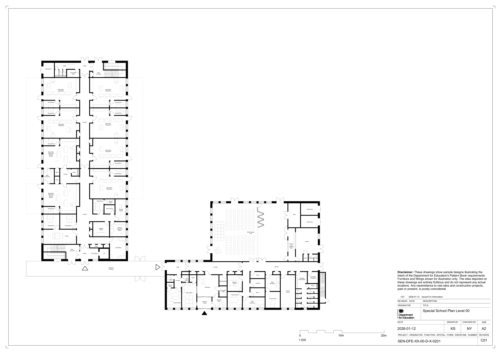
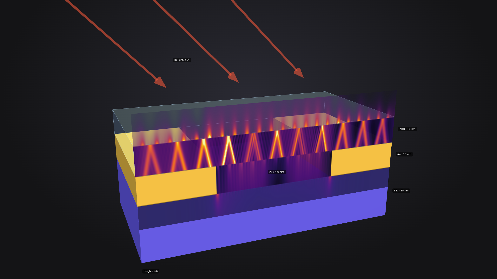
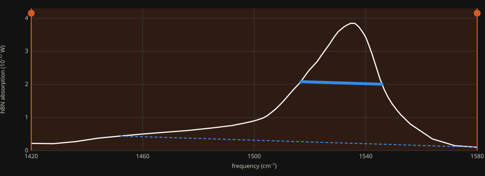
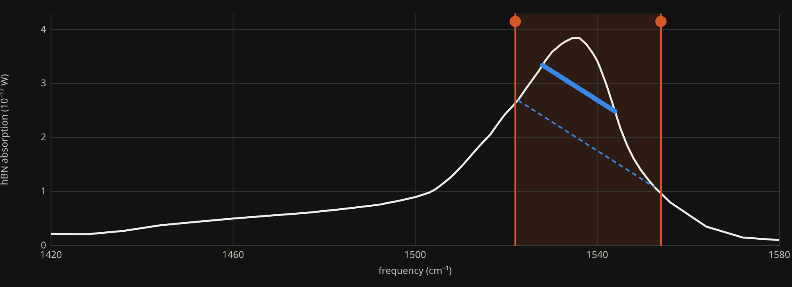

Blueprint
Construction
reasoning

Two parallel cases. Real questions. Checkable answers.
Construction
reasoning

Nanocavity
research

Blueprint / The agent environment
A licensed drawing, a work order and tool outputs.
Render and crop; read text with OCR; inspect geometry;
recover scale and calculate.
Quantity, unit, drawing evidence, confidence
and assumptions.
Evidence credit is gated by the numerical answer.
Blueprint / A saved model decision
The saved run treats the lower horizontal line as furniture or equipment.
Its selected region extends above
the reference inner-wall boundary.
DeepSeek
29.1 m²+8.2% from reference
Kimi
26.4 m²−1.9% from reference
Reference: 26.9 m² · Numeric tolerance: 2%
Same drawing and task. This boundary choice contributes to the discrepancy; it is not the only numerical factor.
Blueprint / Historical evidence
Mean verifier reward, not accuracy. The oracle uses privileged gold;
it is not a same-input learned baseline.
Actual model attempts
with saved replays
Historical trials total
including oracle and no-op
One recorded attempt per model/task. No three-repeat claim. No model weights trained.
Shared drawings and synthetic scans do not establish generalization to unseen buildings.
Cavity / The physical question
hBN is a layered crystal.
Infrared light couples to
vibrations of its lattice.
The cavity’s geometry shapes the patterns.
Explore fields, modes and spectra
before accepting an interpretation.
Computed field visualization · heights stretched ×6 · not microscopy.
Cavity / Measurement sensitivity
Full analysis window
1420–1580 cm⁻¹

Narrow analysis window
1522–1554 cm⁻¹

A higher estimate does not mean
the physical cavity improved.
Changing the window changes the endpoint baseline and estimated linewidth. These are not new experimental ground truths.
Integrity / Keep the checks explicit
Environment scoring audit
40 tasks × 6 deterministic controls.
These are not new model runs.
| Reference answer | 1.00 |
| No submission | 0.00 |
| Explicit abstention | 0.10 |
Also checks confident-wrong answers, duplicate keys and overflowing numbers. “Stop-early” is explicit abstention after observing.
Cavity / Local reply checker
Paste an AI’s answer to the toy problem.
The browser compares supported numbers.
Paste → Parse → Compare
No live model API call.
No scientific proof verification.
No cavity-design validation.
This checker is independent of the hBN field and spectral plots. It does not check a new physical claim against the current cavity.
Follow a real drawing task,
replay a decision and inspect its reward.
Explore stored fields,
change a window and try the local checker.
Source, evidence and reproduction
github.com/Yue-fy/blueprint-cavityRunnable product, saved evidence and offline checks.